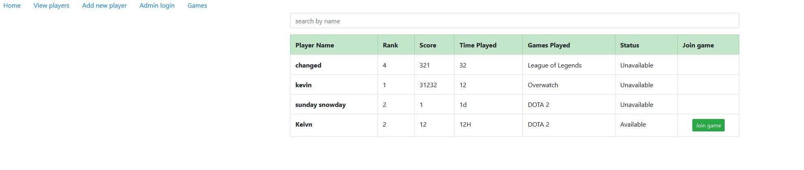
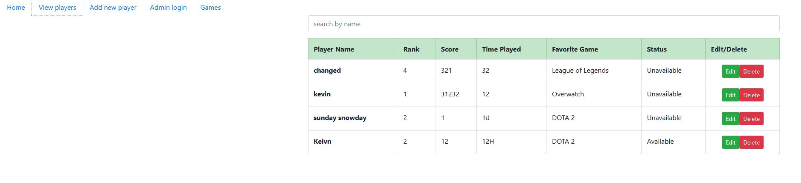

MEAN Stack Gamer Lobby
To see the code for this project, click here to view the repository.
This project was completed during my third year at George Brown college. The app was created using the MEAN stack which in MongoDB, Express, Angular and NodeJS. This project was fairly difficult to do as it required a lot of self learning. Overall, I learned a lot from this project and I hope to revisit it to further enchance the app. The app allows players to join different games if they are not already in one. The app allows admins to view the games list, add players, edit players, and delete players. To login in as admin, the user and password is admin.
Please give a moment for the app to load. App available here.
